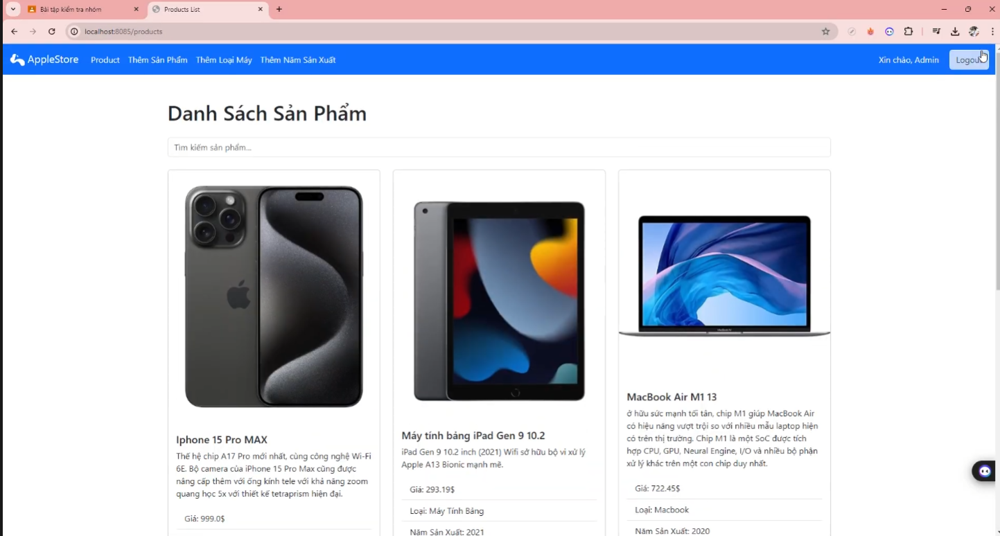

Ngôn Ngữ Lập Trình: Java
Java là một trong những ngôn ngữ lập trình phổ biến và lâu đời nhất, được sử dụng rộng rãi trong nhiều lĩnh vực từ phát triển ứng dụng doanh nghiệp, ứng dụng di động, đến hệ thống nhúng và trò chơi. Khi nhìn nhận Java trong lập trình, có rất nhiều cảm nghĩ tích cực liên quan đến sự ổn định, tính linh hoạt và khả năng mở rộng của nó. Khi nhắc đến Java, điều đầu tiên xuất hiện trong tâm trí tôi là sự ổn định và tính chuyên nghiệp. Dù không phải là ngôn ngữ hiện đại nhất, Java lại có một sức hút đặc biệt nhờ tính thực tiễn và khả năng ứng dụng rộng rãi.

Trải nghiệm với Java, tôi cảm nhận rõ ràng rằng đây là một ngôn ngữ "có trọng lượng". Từng dòng mã viết ra không chỉ mang ý nghĩa chức năng, mà còn tạo cảm giác chắc chắn, kỹ lưỡng. Điều này có thể làm Java hơi cồng kềnh so với các ngôn ngữ khác, nhưng chính sự chặt chẽ đó lại dạy tôi cách lập trình cẩn thận và tư duy có hệ thống hơn.
Một điều khiến tôi thấy thích thú là khi nhìn lại những dự án đã hoàn thành bằng Java, chúng vẫn hoạt động ổn định theo thời gian. Ngôn ngữ này như một người bạn đồng hành đáng tin cậy, giúp tôi tự tin rằng sản phẩm mình tạo ra sẽ không dễ dàng "sập" khi gặp thay đổi hoặc tải nặng.
Tóm lại, Java với tôi là một ngôn ngữ đáng quý. Nó không hào nhoáng, nhưng lại bền bỉ và mạnh mẽ. Học và làm việc với Java giúp tôi không chỉ nâng cao kỹ năng lập trình, mà còn rèn luyện một tư duy nghiêm túc và kỷ luật – điều rất cần thiết cho bất kỳ ai muốn theo đuổi con đường lập trình lâu dài.